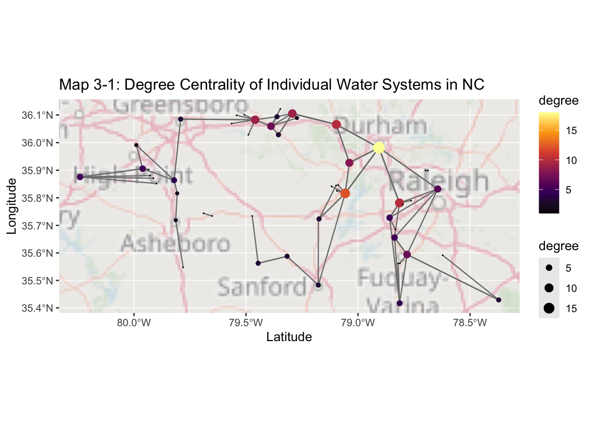
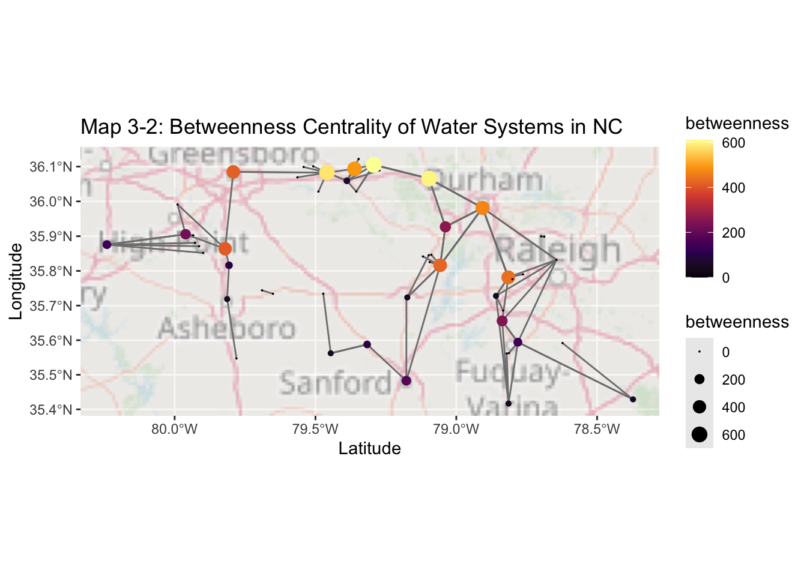
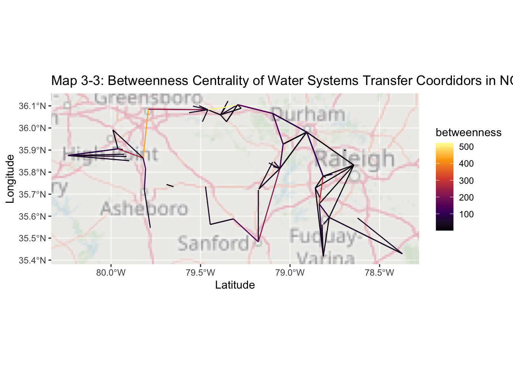
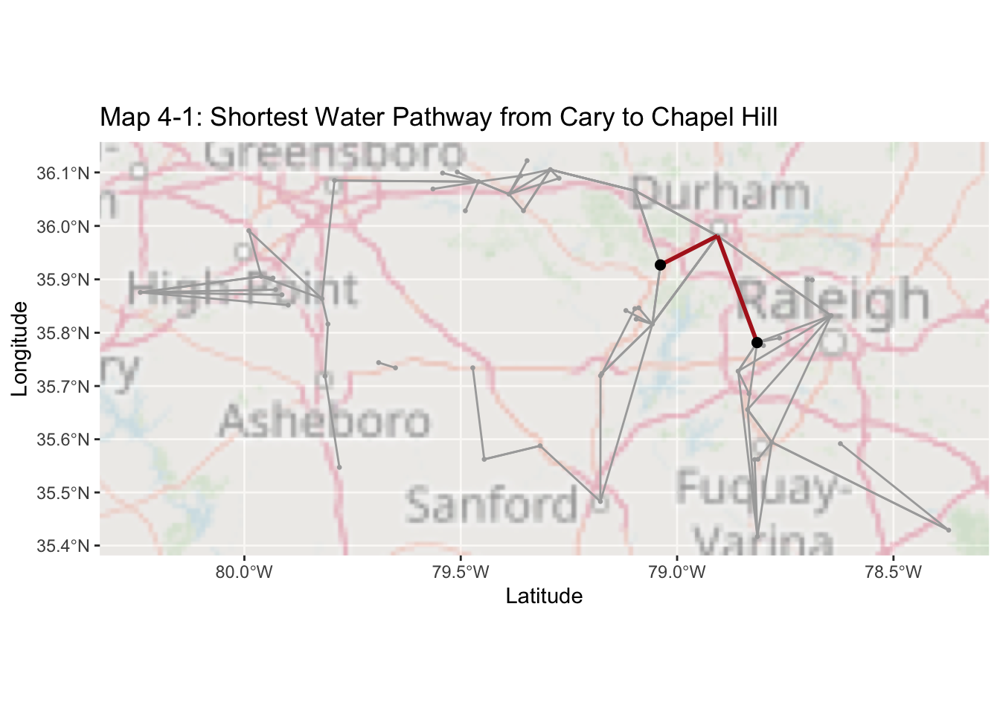
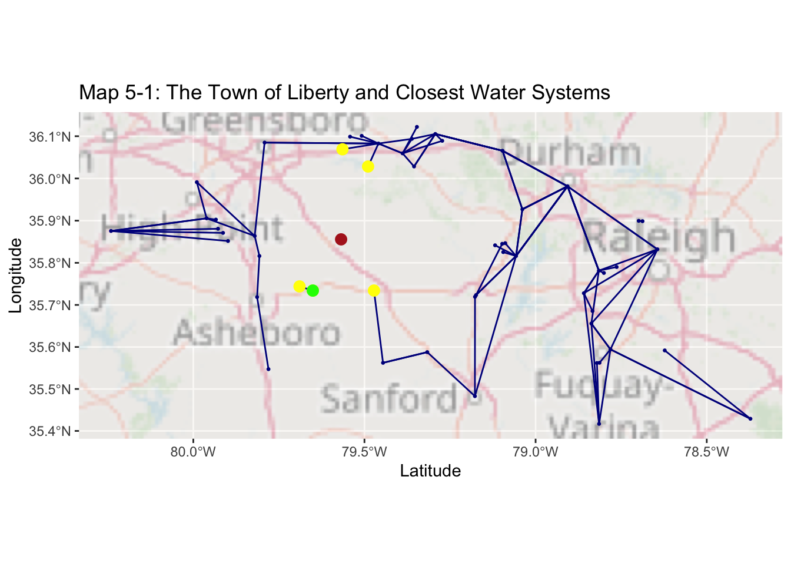

Reid Consulting Studio Network Analysis Report on Water Transfer for the NC Department of Environmental Quality
Reid Consulting Studio’s analyst visualized data across existing networks and regional distances to prepare a summary of water transfer ability throughout the state. We have also included an analysis of key cities for water connectivity in the area and a recommendation for where the Town of Liberty could be incorporated into the existing systems to secure its water supply. Our findings indicate SOMETHING
Our consulting firm highly values transparency and has included our representative’s coding work, should there be any questions on our methodologies.
#Installing needed packages#install.packages("tmap")#install.packages("sf")#install.packages("tidygraph")#install.packages("igraph")#install.packages("osmdata")#install.packages("nabor")#install.packages("tidyverse")#loading packages into the documentlibrary(sf)
Linking to GEOS 3.13.0, GDAL 3.8.5, PROJ 9.5.1; sf_use_s2() is TRUE
library(tidygraph)
Attaching package: 'tidygraph'
The following object is masked from 'package:stats':
filter
library(igraph)
Attaching package: 'igraph'
The following object is masked from 'package:tidygraph':
groups
The following objects are masked from 'package:stats':
decompose, spectrum
The following object is masked from 'package:base':
union
library(osmdata)
Data (c) OpenStreetMap contributors, ODbL 1.0. https://www.openstreetmap.org/copyright
library(nabor)
Attaching package: 'nabor'
The following object is masked from 'package:igraph':
knn
── Conflicts ────────────────────────────────────────── tidyverse_conflicts() ──
✖ lubridate::%--%() masks igraph::%--%()
✖ dplyr::as_data_frame() masks tibble::as_data_frame(), igraph::as_data_frame()
✖ purrr::compose() masks igraph::compose()
✖ tidyr::crossing() masks igraph::crossing()
✖ dplyr::filter() masks tidygraph::filter(), stats::filter()
✖ dplyr::lag() masks stats::lag()
✖ purrr::simplify() masks igraph::simplify()
ℹ Use the conflicted package (<http://conflicted.r-lib.org/>) to force all conflicts to become errors
library(tmap)library(leaflet)#install.packages("prettymapr")library(prettymapr)#install.packages ("ggspatial")library(ggspatial)#bringing in all of the datasetsconnected_points <-st_read("/Users/celestereid/Documents/PLAN372/PLAN372_2/plan372_hmks/HW 5/network_data/connected_points.gpkg")network <-st_read("/Users/celestereid/Documents/PLAN372/PLAN372_2/plan372_hmks/HW 5/network_data/network.gpkg")unconnected_points <-st_read("/Users/celestereid/Documents/PLAN372/PLAN372_2/plan372_hmks/HW 5/network_data/unconnected_points.gpkg")
Question 1: Mapping Existing Systems and their Connections
#Mapping out all the datasets in one mapleaflet() %>%addCircleMarkers(data=connected_points, color ="darkgreen") %>%#connected pointsaddCircleMarkers(data = unconnected_points, color ="hotpink") %>%#un-connected pointsaddPolylines(data = network, color ="blue") %>%#the network of edges that connects pointsaddTiles() %>%setView(lng =-79.5, lat =36, zoom =8.5) %>%addScaleBar( position ="bottomright")
The above map depicts all water systems in the North Carolina Triangle region, and the paths which connect them (if said paths exist). The pink markers represent the systems in North Carolina which are not connected to eachother, while the green represent those that are. The blue lines are the pathways which connect each of the green inerconnected water systems to eachother. As you can see, there are many more unconneced systems, as compared to connected systems. In fact, there are only 36 connected systems compared to almost 400 unconnected ones. Water system connectivity allows for greater flexiblity in times of drought, because water from other localities can be pumped into an area. The nearly 400 unconnected systems, are therefore at higher risk than the connected ones.
Question 2: Graphing and Mapping Network Connections
edges <- network %>%mutate(edgeID =c(1:n())) #adding a column that associated each edge with a unique number to identify itnodes <- edges %>%#new object to manipulated nodesst_coordinates() %>%#pulled x and y coordinates and edge ID into a matrixas_tibble() %>%#made it into a tablerename(edgeID = L1) %>%#renamed L1 back to edge IDgroup_by(edgeID) %>%#grouped by edge IDslice(c(1, n())) %>%ungroup() %>%mutate(start_end =rep(c('start', 'end'), times =n()/2)) #tells us which points are starts of edges and which are ends#gives each node a unique ID for its coordinate position, XY such that nodes that are on different edges that meet still have a same identifying IDnodes <- nodes %>%mutate(xy =paste(.$X, .$Y)) %>%mutate(nodeID =group_indices(., factor(xy, levels =unique(xy)))) %>%select(-xy)
Warning: There was 1 warning in `mutate()`.
ℹ In argument: `nodeID = group_indices(., factor(xy, levels = unique(xy)))`.
Caused by warning:
! The `...` argument of `group_indices()` is deprecated as of dplyr 1.0.0.
ℹ Please `group_by()` first
#creating a dataset with just start nodes and pulling their node IDs into a matrixsource_nodes <- nodes %>%filter(start_end =='start') %>%pull(nodeID)#creating a dataset with just end nodes and pulling their node IDs into a matrixtarget_nodes <- nodes %>%filter(start_end =='end') %>%pull(nodeID)#creating new variables representing which node each edge starts and ends atedges = edges %>%mutate(from = source_nodes, to = target_nodes)#now we want a dataset where each node is unique and corresponds with one point. Aka we don't need duplicates for every start and end point. We just want a catalouge of what nodes exist. nodes <- nodes %>%distinct(nodeID, .keep_all =TRUE) %>%#getting rid of duplicates#select(-c(edgeID, start_end)) %>% #removing unneeded start and end columnsst_as_sf(coords =c('X', 'Y')) %>%#making it into a spatial dataset with X and Y as lat and longst_set_crs(st_crs(edges))tbl_graph(nodes = nodes, edges =as_tibble(edges), directed =TRUE)
#making the data into a graph - makes the edges into a tibble beforehand to prevent errors and keep smooth integrationgraph =tbl_graph(nodes = nodes, edges =as_tibble(edges), directed =FALSE)graph
# A tbl_graph: 54 nodes and 91 edges
#
# An undirected multigraph with 3 components
#
# Node Data: 54 × 4 (active)
edgeID start_end nodeID geometry
<dbl> <chr> <int> <POINT [°]>
1 1 start 1 (-79.3885 36.0594)
2 1 end 2 (-79.4591 36.0827)
3 2 end 3 (-79.2728 36.0891)
4 3 end 4 (-79.3614 36.0937)
5 4 end 5 (-79.3467 36.122)
6 5 end 6 (-79.293 36.1053)
7 6 end 7 (-79.3551 36.0284)
8 7 start 8 (-79.7917 36.0849)
9 10 end 9 (-79.4894 36.0283)
10 12 end 10 (-79.542 36.0989)
# ℹ 44 more rows
#
# Edge Data: 91 × 7
from to Name Description capacity geom edgeID
<int> <int> <chr> <chr> <chr> <LINESTRING [°]> <int>
1 1 2 Burlington,… BuyerID: N… Contrac… (-79.3885 36.0594, -79.4… 1
2 1 3 Mebane, Tow… BuyerID: N… <NA> (-79.3885 36.0594, -79.2… 2
3 1 4 Haw River, … BuyerID: N… Contrac… (-79.3885 36.0594, -79.3… 3
# ℹ 88 more rows
Our analysts began their work by identifying and assigning each node of interconnection to a unique value. A similar value assignment was given to each existing pathway connecting water systems, as displayed in the table above. These nodes and their interconnected pathways were then displayed in the map below. The network should look identical to the one above, though mapped in a simplified color scheme, and excluding all unconnected nodes. However the creation of the above table is crucial to the manipulation of data for calcuations of water transferability and connections.
[v3->v4] `tmap_options()`: use basemap.server instead of basemaps
Question 3: Centrality
#We want to work with the edges specifically so we are identifying them and then creating a new variable for each edge's lengthgraph <- graph %>%activate(edges) %>%mutate(length =st_length(geom))#now we're going to mutate new variables for centrality measures (degree and betweeness) to calculate the shortest paths graph <- graph %>%activate(nodes) %>%mutate(degree =centrality_degree()) %>%#centrality based on the number of edges that connect to a nodemutate(betweenness =centrality_betweenness(weights = length)) %>%#centrality based on the number of shortest paths going through a nodeactivate(edges) %>%mutate(betweenness =centrality_edge_betweenness(weights = length)) #centrality based on the number of shortest paths going through an edge
#Maps the nodes based on degree centrality (nodes connected to a node)ggplot() +annotation_map_tile("osm", alpha =0.4)+#background mapgeom_sf(data = graph %>%activate(edges) %>%as_tibble() %>%st_as_sf(), col ='grey50') +#plots edges in grayggtitle("Map 3-1: Degree Centrality of Individual Water Systems in NC")+xlab("Latitude")+ylab("Longitude")+geom_sf(data = graph %>%activate(nodes) %>%as_tibble() %>%st_as_sf(), aes(col = degree, size = degree)) +#plots nodes where color and size is a function of degree centrailtyscale_colour_viridis_c(option ='inferno') +#color schemescale_size_continuous(range =c(0,4))
Zoom: 7

Of the 39 interconnected water systems, we wanted to identify and display which were key for the movement of water between localities. To do this we mapped centrality across two different metrics, betweenness and degree centrality for each water system, as well as betweeenness for the paths that connect each water system to another. Degree centrality (shown in Map 3-1, above ) maps how many water systems any given water system is connected to. That is, which water systems could theoretically transfer water to largest number of other water systems directly. By examining the data we determined that in North Carolina, the most connections any one water system has is 18, in Durham. This means that Durham is likely least vulnerable to drought measures becuase it has the most water systems to which it is connected, and could draw from in an emergency. On the other hand, there are also many peripheral water systems with few connections, that might be more vulnerable.
#Maps the node based centralities of between-ness (shortest path centrality)ggplot() +annotation_map_tile("osm", alpha =0.4)+#background mapgeom_sf(data = graph %>%activate(edges) %>%as_tibble() %>%st_as_sf(), col ='grey50') +#plots edges in graygeom_sf(data = graph %>%activate(nodes) %>%as_tibble() %>%st_as_sf(), aes(col = betweenness, size = betweenness)) +#plots nodes where color and size is a function of betweennessscale_colour_viridis_c(option ='inferno') +#color schemescale_size_continuous(range =c(0,4))+ggtitle("Map 3-2: Betweenness Centrality of Water Systems in NC")+xlab("Latitude")+ylab("Longitude")
Zoom: 7

Degree centrality only looks at direct transfer ability from one water system to others. Another measure of water system importance is betweenness centrality, which quantifies the relative number of “shortest paths” that exist through a water system. In other words, betweenness shows us which water systems would have the most capacity and likelihood to serve as bridges between multi-step water transfer. Betweenness can be calculated for indidvidual water systems, or the paths that exist between water systems. Above, in Map 3-2, betweenness is plotted for each individual water system. Once again, Durham is key city for water transfer ability. However, the water systems between Durham and Greensboro, in Raliegh, and in Cary generaly have relatively high betweenness.
#Maps edges based on centrality of betweennessggplot() +annotation_map_tile("osm", alpha =0.4)+#background mapgeom_sf(data = graph %>%activate(edges) %>%as_tibble() %>%st_as_sf(), aes(col = betweenness) )+scale_colour_viridis_c(option ='inferno') +scale_size_continuous(range =c(0,4))+ggtitle("Map 3-3: Betweenness Centrality of Water Systems Transfer Coordidors in NC")+xlab("Latitude")+ylab("Longitude")
Zoom: 7

Map 3-3, above, detail similar measures of betweenness, but for transfer pathways, as opposed to individual water systems. Betweenness here is a measure of how many “transfer pathways”shortest paths” a single transfer pathway could connect to. In other words, it is a measure of which transfer pathways are most crucial to transport ability over multiple transfers. For example, there is only one transfer pathway that connects the High Point water systems to all of those in Greensboro and the greater Triangle area. This transfer path, brdiges every possible movement between High Point water and the rest of the system, making it crucial to the intterconnectedness of water transferability.
Question 4: Carrying Water to Chapel Hill
#Cary water supply corresponds with nodeID 32, where it is closest to Chapel Hill in connectivity#Chapel hill corresponds iwth nodeID 30#I pulled both these nodeIDs off the map#Here we are designating a new object where we start from (aka cary)from_node <- graph %>%activate(nodes) %>%#interested in nodesfilter(nodeID ==32) %>%#filtering to only node 32, aka Carypull(nodeID)#Here we are designating a new object where end at (aka chapel hill)to_node <- graph %>%activate(nodes) %>%#interestd in nodesfilter(nodeID ==31) %>%#filtering to only node 31, aka chapel hillpull(nodeID)#here we are bringing all of the data above into one dataset and outputting the shortest paths from cary to Chapel Hillpath <-shortest_paths(graph = graph, from = from_node, to = to_node,output ='both',weights = graph %>%activate(edges) %>%pull(length))pathpath$vpath
Our data analyst pulled data together to calculate the shortest route to transfer water from Cary to Chapel Hill. Her calcuations can be seen above. In short, she identified each of the water systems at the ends of the route (Cary and Chapel Hill), before pulling data regarding which water systems and transfer routes that water moving from Cary to Chapel Hill would encounter, if it moved along the shortest path. This route took one transfer, through the city of Durham. The first leg of this journey was about 23718 meters long, and the second about 13338 meters. Our analyst also calulated the total distance traveled, about 37055 meters. The path which the water would travel is shown below in Map 4-1.
ggplot() +annotation_map_tile("osm", alpha =0.4)+geom_sf(data = graph %>%activate(edges) %>%as_tibble() %>%st_as_sf(), col ='darkgrey') +geom_sf(data = graph %>%activate(nodes) %>%as_tibble() %>%st_as_sf(), col ='darkgrey', size =0.5) +geom_sf(data = path_graph %>%activate(edges) %>%as_tibble() %>%st_as_sf(), lwd =1, col ='firebrick') +ggtitle("Map 4-1: Shortest Water Pathway from Cary to Chapel Hill")+xlab("Latitude")+ylab("Longitude")+geom_sf(data = path_graph %>%activate(nodes) %>%filter(nodeID %in%c(from_node, to_node)) %>%as_tibble() %>%st_as_sf(), size =2)
Zoom: 7

#Raleigh#Here we are designating a new object where start at in Raleigh from_node_r <- graph %>%activate(nodes) %>%#interested in nodesfilter(nodeID ==37) %>%#filter to just Raleigh's nodepull(nodeID)#Here we are rbinging all of the data into a new object and outputting the shortest path from Raleighpath_r <-shortest_paths(graph = graph,from = from_node_r,to = to_node,output ='both',weights = graph %>%activate(edges) %>%pull(length))
Our data analyst also calculate the shortest route to transfer water from Raleigh to Chapel Hill. Her calcuations can be seen above. Like with the Cary calculation, she identified each of the water systems at the ends of the route (Raleigh and Chapel Hill), before pulling data regarding which water systems and transfer routes that water moving from Raleigh to Chapel Hill would encounter, if it moved along the shortest path. Like Cary, this route took just one transfer, through the city of Durham. The first leg of this journey was about 28895 meters long, and the second leg of the journey actually follows the same path from Durham to Chapel Hill as the first, so about 13338 meters. Our analyst also calulated the total distance traveled from Raleigh, which was about 42233 meters. This is about 5178 meters longer than the path from Cary to Chapel Hill. Given that the cost of water depends on the distance it travels, Cary would be a less expensive and more practical option to draw water from, should Chapel Hill ever need it. The path which the water would travel, if it moved from Raleigh is shown below in Map 4-1.
ggplot() +annotation_map_tile("osm", alpha =0.4)+geom_sf(data = graph %>%activate(edges) %>%as_tibble() %>%st_as_sf(), col ='darkgrey') +geom_sf(data = graph %>%activate(nodes) %>%as_tibble() %>%st_as_sf(), col ='darkgrey', size =0.5) +geom_sf(data = path_graph_r %>%activate(edges) %>%as_tibble() %>%st_as_sf(), lwd =1, col ='firebrick') +ggtitle("Map 4-2: Shortest Water Pathway from Raleigh to Chapel Hill")+xlab("Latitude")+ylab("Longitude")+geom_sf(data = path_graph_r %>%activate(nodes) %>%filter(nodeID %in%c(from_node, to_node)) %>%as_tibble() %>%st_as_sf(), size =2)
#creating a dataset with just the location of the town of libertyTown_of_liberty <- unconnected_points %>%filter(Name =="Liberty, Town Of")
#Isolating just Coordinates of the town of Libertycoords_o <- Town_of_liberty %>%#creating an object to represent Libertyst_coordinates() %>%matrix(ncol =2) #making it into a matrix# Coordinates of all nodes in the networknodes_2 <- graph %>%#putting all the nodes into an objectactivate(nodes) %>%#calling for nodes specificallyas_tibble() %>%#as a graphst_as_sf() #as a spatial objectcoords <- nodes_2 %>%#made into a coordinate stytemst_coordinates()# Identifying the closest water system node_index_o <-knn(data = coords, query = coords_o, k =5)#The node IDs that are the closest are 45, 26, 46, 9, and 12#for a single point, this is how we would extract the nodes and plot them to make them plottable on the graph. node_index_o <-knn(data = coords, query = coords_o, k =1)node_index_onode_o <- nodes_2[node_index_o$nn.idx, ]node_o#for multiple points, I am going to replicate the formate of node_o by filtering the nodes objectLiberty_adjacent <- nodes %>%filter (nodeID %in%c(45, 26, 46, 9, 12))
ggplot() +annotation_map_tile("osm", alpha =0.4)+geom_sf(data = graph %>%activate(edges) %>%as_tibble() %>%st_as_sf(), col ='darkblue') +geom_sf(data = graph %>%activate(nodes) %>%as_tibble() %>%st_as_sf(), col ='darkblue', size =0.5) +ggtitle("Map 5-1: The Town of Liberty and Surrounding Connected Water Systems")+xlab("Latitude")+ylab("Longitude")+geom_sf(data = Town_of_liberty, size =3, col ='firebrick') +geom_sf(data = Liberty_adjacent, size =3, col ="yellow")+geom_sf(data = node_o, size =3, col ="green")+#here's the closest pointggtitle("Map 5-1: The Town of Liberty and Closest Water Systems")+xlab("Latitude")+ylab("Longitude")
Zoom: 7

The Town of Liberty needs to augment its water supply. In order to do so, we have compiled a list of the closest water systems which already have some level of interconnectivity. Refering to the map above, the green water system, located in Ramseur, is the closest to Liberty. However, Ramseur’s water system is only connected to one other water system. If the water in these two other towns is strained, or not abundant enough to provide for Ramseur, the cost of connecting these water systems would not have an benefit. Therefore, careful considerations of the water supply in Franklinville would need to be made prior to connection. Alternatively, the four other points closest to Liberty each connect to a much more robustly connected water system, as seen in Map 5-2. The second closest water system is also connected to only one other and the third is connected to many, but only has one degree of centrality. Given these complex metrics, we reccomend a future cost-benefit analysis for the distance of construction vs. the resiliency associated with connection to each of the possible nodes in Map 5-2. The distances corresponding to each of the five points are listed below. Point 5 is located in Franklinville, point 4 is in Ramseur, point 3 is in Siler City, point 2 is in Whisett, and point 1 is in Alamance. Preliminarily, we would reccomend either the Siler City or Alamance water systems to connect to on account of middling distance with higher water system connectivity to prevent unfruitful investment.